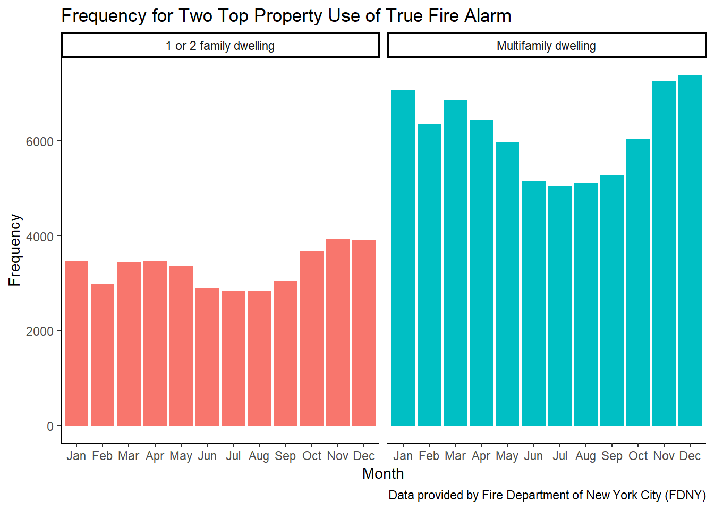

fire_factors
# load data from online source
fire_data = read.socrata("https://data.cityofnewyork.us/resource/ibte-hq4u.csv") %>%
janitor::clean_names()# count the frequency of the specific description of incidents and plot with order
fire_factor1 = fire_data %>%
group_by(incident_type_desc) %>%
summarize(count = n()) %>%
arrange(desc(count)) %>%
ungroup() %>%
separate(incident_type_desc, into = c("incident_type", "incident_desc"), sep = "-") %>%
mutate(incident_type = str_sub(incident_type, 1, 3),
incident_type = as.integer(incident_type),
incident_desc = forcats::fct_reorder(incident_desc, count))## Warning: Expected 2 pieces. Additional pieces discarded in 13 rows [19, 22,
## 44, 81, 82, 85, 89, 91, 108, 134, 141, 154, 178].fire_factor1 %>%
filter(incident_type >= 100 & incident_type <=199) %>%
filter(count > 100) %>%
select(-incident_type) %>%
knitr::kable()| incident_desc | count |
|---|---|
| Cooking fire, confined to container | 87039 |
| Outside rubbish, trash or waste fire | 28130 |
| Building fire | 13089 |
| Trash or rubbish fire, contained | 10451 |
| Fuel burner/boiler malfunction, fire confined | 9672 |
| Passenger vehicle fire | 8985 |
| Fire, other | 8196 |
| Fires in structure other than in a building | 6092 |
| Brush or brush | 4516 |
| Commercial Compactor fire, confined to rubbish | 2485 |
| Outside rubbish fire, other | 1237 |
| Road freight or transport vehicle fire | 949 |
| Mobile property (vehicle) fire, other | 398 |
| Special outside fire, other | 316 |
| Chimney or flue fire, confined to chimney or flue | 226 |
| Incinerator overload or malfunction, fire confined | 207 |
| Outside equipment fire | 181 |
| Rail vehicle fire | 128 |
fire_factor1 %>%
filter(incident_type >= 100 & incident_type <=199) %>%
filter(count > 100) %>%
ggplot(aes(x = incident_desc, y = count)) +
geom_col() +
theme_classic() +
theme(axis.text.x = element_text(angle = 55, hjust = 1, size = 9)) +
labs(title = "Frequency for Contributing Factors of True Fire Alarm",
x = "Contributing Factors",
y = "Frequency",
caption = "Data provided by Fire Department of New York City (FDNY)")
asso_sea_cause =
fire_data %>%
select(incident_date_time, incident_type_desc,
property_use_desc, zip_code, borough_desc) %>%
separate(borough_desc, sep = "- ", into = c("n", "borough")) %>%
select(-n) %>%
separate(incident_type_desc, into = c("incident_type", "incident_desc"), sep = "- ") %>%
mutate(incident_type = str_sub(incident_type, 1, 3),
incident_type = as.integer(incident_type)) %>%
mutate(month = as.factor(month.abb[as.integer(substr(incident_date_time, 6, 7))]),
month = fct_relevel(month, "Jan", "Feb", "Mar", "Apr", "May",
"Jun", "Jul", "Aug", "Sep", "Oct", "Nov", "Dec"),
year = str_sub(incident_date_time, 1, 4)) %>%
filter(zip_code != "" & zip_code != "99999" &
zip_code != "10691" & zip_code != "11251",
incident_type < 165) %>%
mutate(hour = str_sub(incident_date_time, 12, 13),
hour = as.integer(hour)) %>%
separate(property_use_desc, sep = "- ", into = c("n", "property_use_desc")) %>%
select(-n)## Warning: Expected 2 pieces. Additional pieces discarded in 914 rows [3472,
## 7257, 10510, 14519, 17735, 22456, 24900, 24904, 25203, 26583, 27950, 30180,
## 31089, 37530, 38893, 41521, 51384, 51596, 54277, 59991, ...].## Warning: Expected 2 pieces. Additional pieces discarded in 726 rows [267,
## 337, 632, 744, 1117, 1607, 1637, 1905, 2269, 2334, 2358, 2416, 2598, 2891,
## 3849, 4397, 4505, 4771, 4858, 5686, ...].## Warning: Expected 2 pieces. Missing pieces filled with `NA` in 1 rows
## [69472].cause_hour_plot =
asso_sea_cause %>%
group_by(hour, incident_desc) %>%
summarize(count = n()) %>%
arrange(desc(count)) %>%
ggplot(aes(x = hour, y = count)) +
geom_line(aes(color = incident_desc))+
theme_classic() +
theme(legend.position = "none") +
labs(title = "Frequency for Contributing Factors of True Fire Alarm in Each Hour",
x = "Time",
y = "Frequency",
caption = "Data provided by Fire Department of New York City (FDNY)")
ggplotly(cause_hour_plot)asso_sea_cause%>%
group_by(month, property_use_desc) %>%
summarize(count = n()) %>%
arrange(desc(count)) %>%
filter(count > 2000) %>%
ggplot(aes(x = month, y = count)) +
geom_col(aes(fill = property_use_desc)) +
theme_classic() +
theme(legend.position = "none") +
labs(title = "Frequency for Two Top Property Use of True Fire Alarm",
x = "Month",
y = "Frequency",
caption = "Data provided by Fire Department of New York City (FDNY)") +
facet_wrap(~ property_use_desc) 
asso_sea_cause%>%
drop_na(month) %>%
filter(incident_type %in% c(113, 151)) %>%
group_by(month, incident_desc) %>%
summarize(count = n()) %>%
arrange(desc(count)) %>%
ggplot(aes(x = month, y = count)) +
geom_col(aes(fill = incident_desc)) +
theme_classic() +
theme(legend.position = "none") +
labs(title = "Frequency for Contributing Factors of True Fire Alarm in Each Month",
x = "Month",
y = "Frequency",
caption = "Data provided by Fire Department of New York City (FDNY)") +
facet_wrap(~ incident_desc)